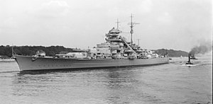

| Spesifikasi | Detail |
|---|---|
| Jenis | Kapal Perang |
| Tonase Standar | 41.700 ton |
| Tonase Penuh | 50.900 ton |
| Panjang | 251 m (823 ft 6 in) secara keseluruhan |
| Lebar | 36 m (118 ft 1 in) |
| Draf | 9,3 m (30 ft 6 in) pada beban penuh |
| Propulsi | 12 x ketel uap bertekanan tinggi, 3 x turbin uap Brown, Boveri & Cie, 3 x poros baling-baling |
| Tenaga | 150.170 shp (111.950 kW) |
| Kecepatan Maksimum | 30,01 knot (55,58 km/jam; 34,53 mph) |
| Jarak Jelajah | 9.280 mil laut (17.190 km) pada 15 knot (28 km/jam) |
| Awak | Antara 2.092 dan 2.192 orang |
| Persenjataan Utama | 8 x meriam 38 cm (15 in) SK C/34 (4 x 2) |
| Persenjataan Sekunder | 12 x meriam 15 cm (5.9 in) SK C/28 (6 x 2) 16 x meriam 10,5 cm (4.1 in) SK C/33 anti-pesawat (8 x 2) |
| Persenjataan Anti-Pesawat Ringan | 16 x meriam 3,7 cm (1.5 in) SK C/30 (8 x 2) 12 x meriam 2 cm (0.79 in) Flak 30 (12 x 1), kemudian ditambah menjadi lebih banyak Flak 30 dan Flakvierling 38 |
| Pesawat | 4 x pesawat apung Arado Ar 196 A-3 |
| Kapasitas Hanggar | 1 hanggar |
| Lapisan Baja Sabuk Utama | 320 mm (12.6 in) Krupp cemented steel |
| Lapisan Baja Dek | 50 mm (2 in) hingga 100 mm (3.9 in) |
| Lapisan Baja Kubah Meriam Utama | 340 mm (13.4 in) depan, 220 mm (8.7 in) sisi dan belakang, 130 mm (5.1 in) atap |
| Tanggal Diluncurkan | 14 Februari 1939 |
| Nasib | Tenggelam pada 27 Mei 1941 |